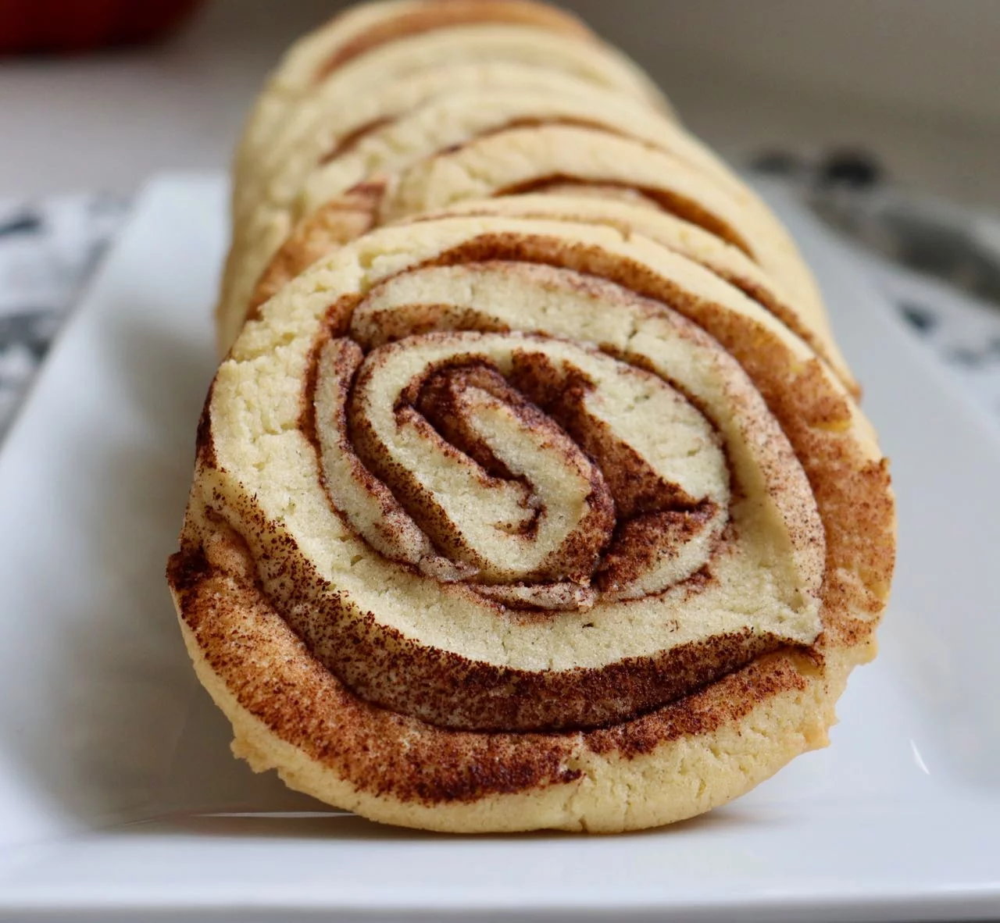

Recipe for Cinnamon Cookie.

These cinnamon roll cookies add a new twist to the cinnamony snicker doodle.
.
The recipe is fairly simple. The ingradients required is also minimal.
Below is the list of ingredients required to get the job done.
- Around three cups of all purpose floor, plus more for rolling out the dough.
- One teaspoon baking soda.
- Half teaspoon fine salt.
- Half cup butter softened.
- Half cup shortening
- One and half cup white sugar.
- Two large eggs.
- 2 tablespoon ground cinnamon or as desired.
Here are the steps you need to follow.
- Sift together all-purpose floor, baking soda and salt in a bowl.
- Beat together butter and shortening using an electric mixer in another bowl until combined; add sugar and continue beating until light and fluffy, about 5 minutes. Pour in eggs, one at a time, beating well after each addition. Pour in flour mixture and blend until batter is smooth.
- Dust a work surface with flour and roll out cookie dough with a floured rolling pin into a 1/4-inch thick rectangle. Sprinkle cinnamon generously over the dough. Roll up the dough gently into a log starting on one of the long sides. Wrap tightly in plastic wrap and refrigerate for 2 to 3 hours.
- Preheat the oven to 350 degrees F (175 degrees C).
- Unwrap the dough log and carefully slice into 1/4-inch pieces without smashing down the cookie. Place on an ungreased baking sheet.
- Bake in the preheated oven until lightly golden around the edges, about 12 minutes.